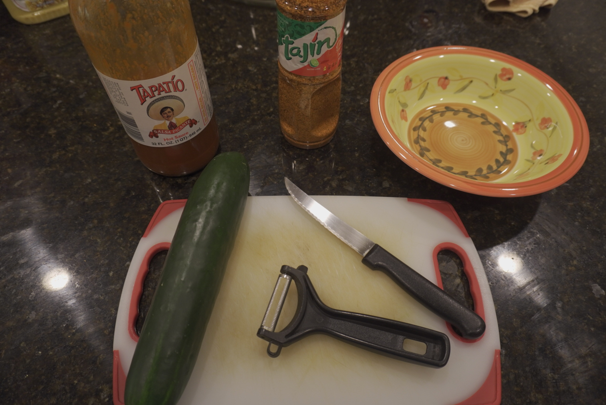
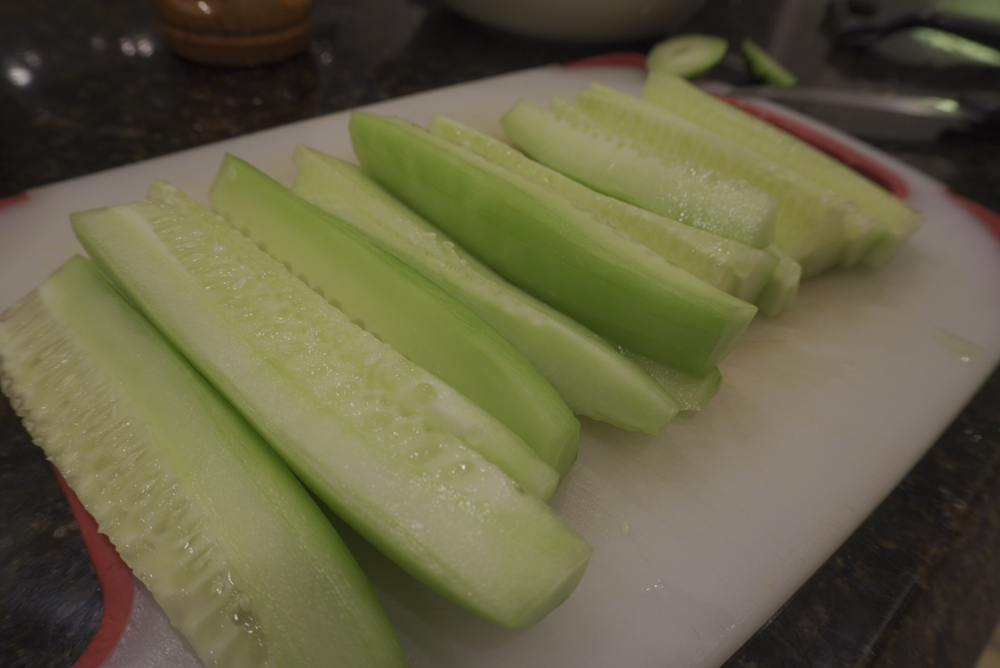
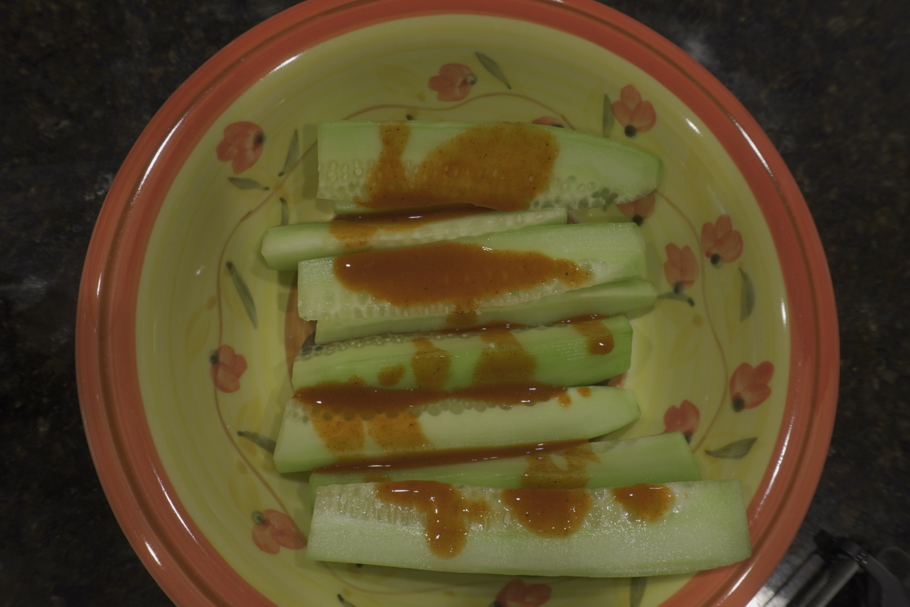
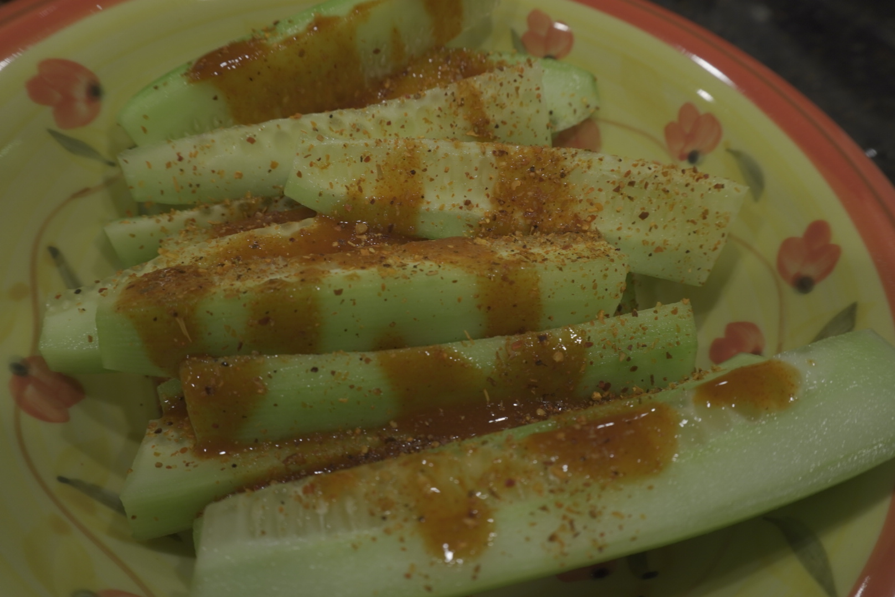

Prepare area with a bowl, cutting board, peeler, and knife.
Cut cucumber into desired configuration.
Place contents into bowl and top conservatively with tapatio and liberally with Tajin or vice versa.
Voila!
you now served yourself a healthy and tasty snack!Participate in my personal challenge and apply more tapatio to your dish!
